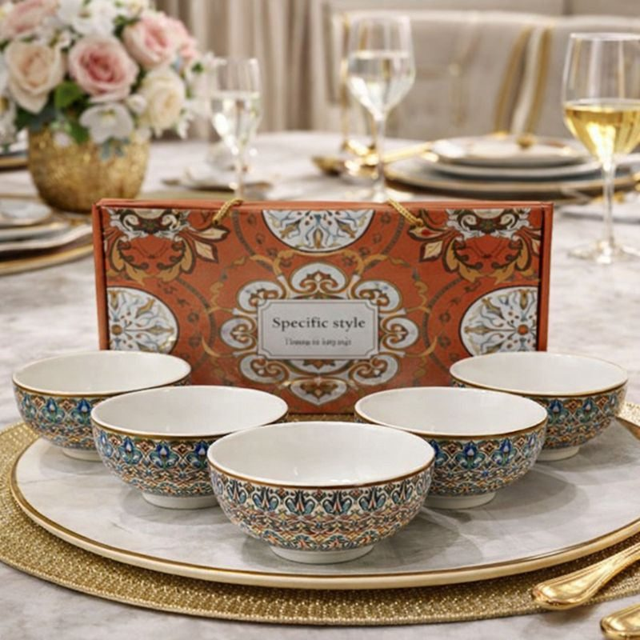
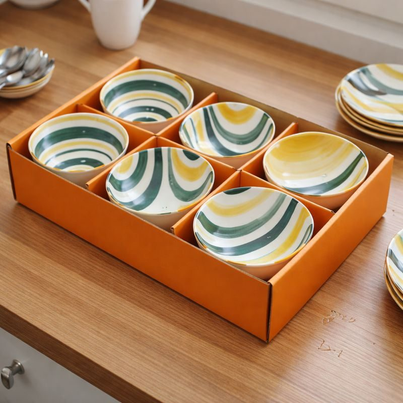
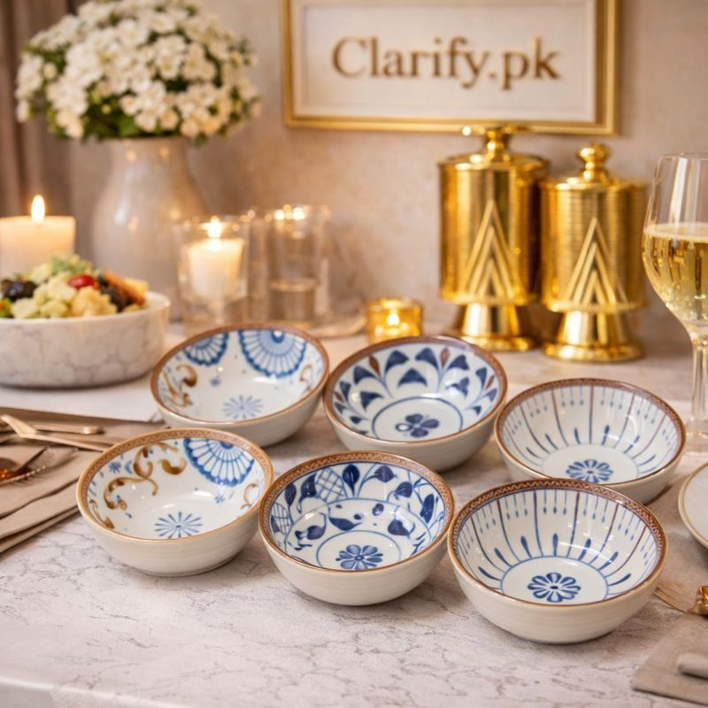

From Eid sheer khurma to Sunday gajar ka halwa, how to choose and use dessert and serving bowls that make traditional sweets look as good as they taste.



No Pakistani meal for guests is complete without something sweet. Kheer chilled in clay kunnay, sheer khurma on Eid morning, gajar ka halwa in winter, zarda at weddings, custard and trifle at birthday parties, and kulfi on summer nights. These desserts carry memories and traditions, and how they are served matters. A good set of bowls makes even a simple kheer feel special, and saves the host from serving dessert in mismatched cups and saucers.
There are two ways to serve dessert. A large serving bowl placed on the table lets guests help themselves, which suits family gatherings and buffets. Individual bowls, filled in the kitchen and brought out on a tray, feel more elegant and help with portion control. Many hosts use both: a large bowl of halwa on the table and small bowls of kheer chilled in advance.
Dessert bowls are usually smaller than those used for salan or raita. A bowl of around 4 to 5 inches in diameter holds a generous serving of kheer or custard. Slightly larger, shallow bowls suit halwa and zarda. For ice cream and kulfi falooda, deeper bowls stop it melting over the edges. A set of six is a good start for most families; buy two sets if you host big gatherings.
Ceramic bowl sets with matching patterns give a coordinated look without being fragile.
Colour and pattern can complement the dessert. White kheer and sheer khurma look lovely in blue-patterned or bohemian painted bowls, where the contrast makes the pista and badam garnish stand out. Bright orange gajar ka halwa looks rich in plain white or cream bowls. Japanese-style blue and white bowls give a fresh, modern look to fruit desserts and custard.
A few small touches make desserts look restaurant-worthy:
For Eid, place a bowl of sheer khurma beside each plate before guests arrive; it looks welcoming and festive.
Good bowls are versatile. The same set can serve raita, chutney, dahi bhallay, chaat, nuts and dry fruits at chai time, or soup on winter evenings. This makes a quality bowl set one of the most useful purchases for a kitchen. Boxed sets also make excellent gifts for weddings, housewarmings and Eid.
Most ceramic bowls are dishwasher safe, but hand washing preserves painted designs for longer. Avoid sudden temperature shocks, such as pouring boiling halwa into a bowl straight from the fridge. Store bowls with a paper napkin between them to prevent scratches, and keep special sets in their gift box when not in use.
At a dawat, dessert is the last impression guests take home. Even if the main course is simple, a beautifully served kheer leaves a lasting memory. Plan dessert early, make it the day before so it can chill, and set out your bowls and spoons in the morning.
Ramadan brings its own sweets: fruit chaat, sewaiyan, custard and dahi bhallay at iftar, and sheer khurma on Eid morning after the month ends. Having a matching set of bowls ready before Ramadan begins saves washing and searching every evening. Keep one set for iftar sweets and another for serving guests who visit on Eid, so the good bowls stay in perfect condition for the festive days.
Hand-painted, bohemian and Japanese-style ceramic bowl sets, many in gift boxes, are available from Trenducts with delivery throughout Pakistan. Choose a set that suits your favourite sweets and enjoy serving them.